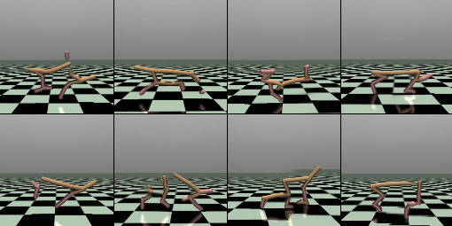
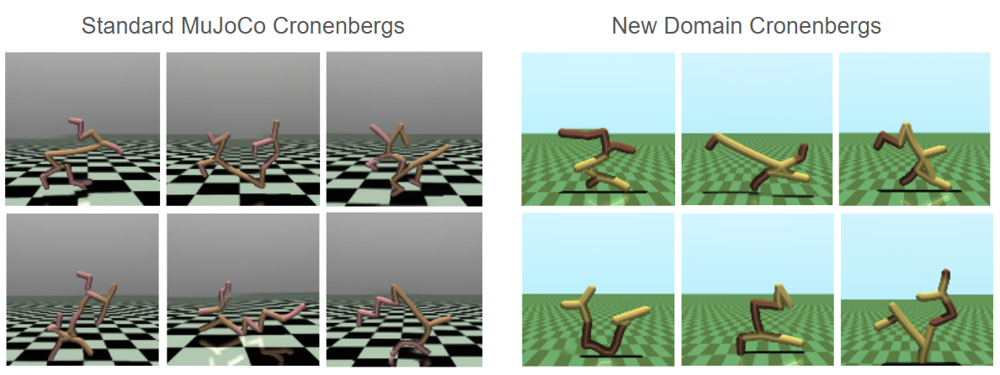
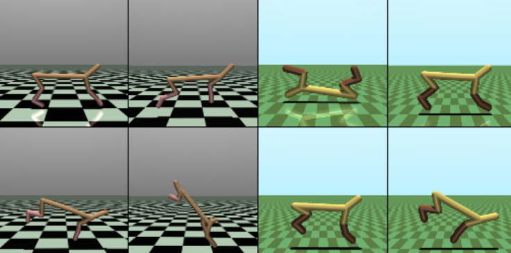
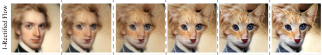
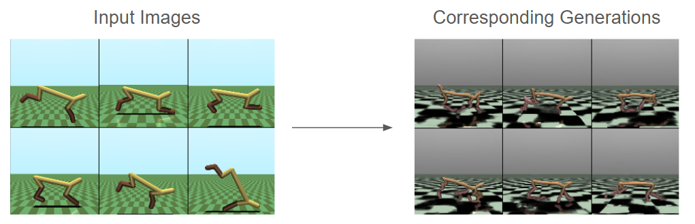
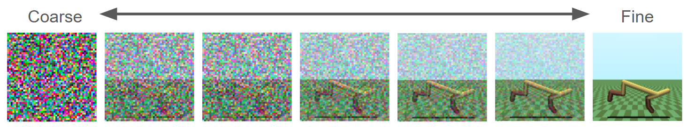
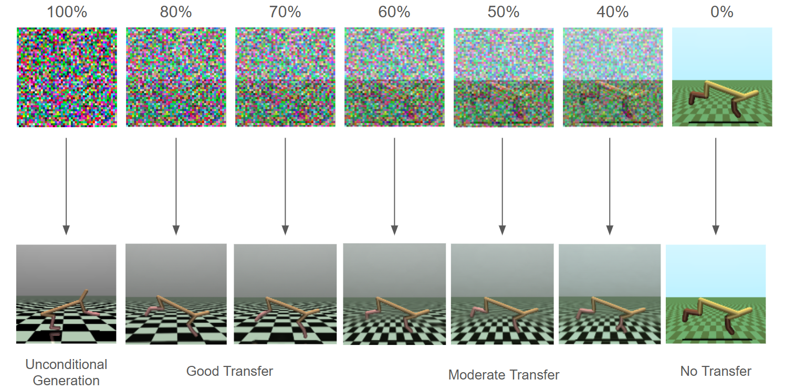
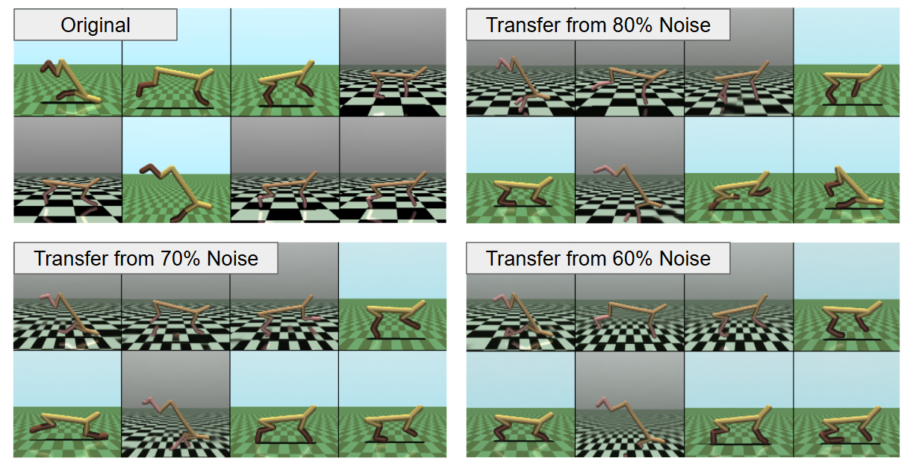
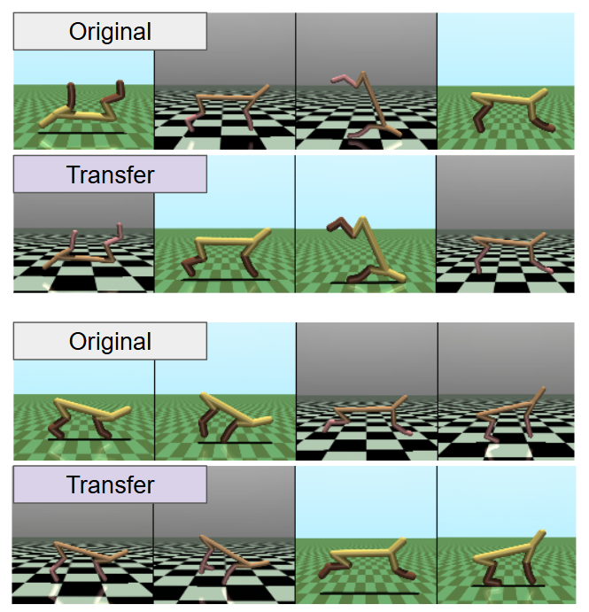

MuJoCo Cronenbergs
(Mis)Adventures in Style Transfer, Part 2
Above: Some entertaining flow matching results.
Toy Problem Recap
In my last post, I looked at implementing CycleGAN to transfer between two variants of the HalfCheetah environment in MuJoCo, as a stand-in for a scenario in which you have demonstration data in one domain, but need to train a policy in another. For example, two similar robotic platforms, two environments of the same platform, and so on.

In the case of CycleGAN, I was able to get really good results but only after removing the "cycle" term, which reinforces the ability to not only transfer from one domain to another, but also to transfer back and recover the original data point. This is a key idea from CycleGAN: we initially know more about transferring "back" to the starting domain (where we have ground truth), than transferring away from it. This applies no matter which domain you consider the start. However, this term in CycleGAN also discouraged the generation of features that were unique to only one domain, since those can not be transferred all the way through the cycle.
I have been experimenting a lot with diffusion and flow matching recently, so I decided to try using these techniques for style transfer rather than GANs. I will say upfront that I am unclear which is actually better- both were able to perform really well for this toy problem and a more difficult challenge would be needed to determine when one outperforms the other.
Cronenbergs
The first step to my exploration, and a good starting point for any future experiments, is to simply generate images from both domains using a flow matching model. I have only tried generating images once before (see this post), in which I used a diffusion model to generate flower images. In hindsight this was a very forgiving problem, since lots of randomness is to be expected in the structure of flowers and even nonsense can appear "natural", as long as the right colors and textures are there.
I quickly found this out when generating HalfCheetah images, which are the opposite. The MuJoCo images are crisp simulation renderings with a known structure, and "nonsense" is really easy to spot. The first one or two attempts were so incredibly bad that I wanted to post about it, and that was really the starting point for a more concerted deep dive into this problem.
Behold, some of my initial results:

The phrase that immediately came to mind was "Cronenbergs," coined by Rick and Morty in reference to David Cronenberg, who has made a variety of movies that include horrifying mutations and hybrids of the human body. A good recent example of a "Cronenberg" might be the ending of The Substance, which I will not explain to avoid spoilers. But its gross.
In my mind, the key feature of a Cronenberg, and what makes it scary, is that pieces of it are recognizable. Taking these pieces and composing them together in a bizarre way makes a monster. And this is exactly what my flow models did. The pieces are there but the overall form is not. I tried to find some of the best ones:

If I hadn't generated these myself I would think someone just got really carried away with making new RL environments. It's a really fun failure mode: they look like real renders, but the overall structure of the "creature" is just random.
This strange juxtaposition- proper details but incorrect composition- allowed me to eventually trace the problem down. My models were using UNets that did not have enough modules. Each module of the UNet downsizes the input and allows the model to reason at a lower resolution, focusing on the overall structure instead of the pixel-level details. So with a very short UNet, we get details, but no structure. Quickly fixed by making the network bigger, and we quickly get nice, believable generations (usually):

No style transfer yet, but at least a good starting point.
Direct Flow
One quick thing to try, which did not work, is simply to flow between the two domains instead of starting from noise. I was inspired by this result from the Rectified Flows paper (see this blog post by the authors):

And so I tried the following:
Select random batches from each domain, B1 and B2
Train a flow model to output velocity (B2-B1) at each timestep between 0 and 1, where:
- The input at timestep is a linear interpolation:
This was a bad idea. Since the images are unpaired, there is actually very little to transfer between two randomly selected samples from each, and the model basically just learned to (poorly) generate a sample from domain B that is unrelated to the sample from domain A.

On closer inspection, it looks like in this specific case the authors of Rectified Flow modify their loss function to weight image values according to how much they change a latent representation of the images, taken from a classifier. See equation (20) in the Rectified Flow paper. I think this boils down to something like: learn to flow the images to the other domain, but don't make changes that would too greatly change the image's latent representation at any one step. This results in generations which retain the structure of the original image, and even some of the outlying details like the man's collar above. This was intended by the authors: they specifically want to make images that are not fully in the new domain, but instead are plausible hybrids between the two.
CycleDiffusion
I spent much more time looking at an idea called CycleDiffusion, which presents a really elegant solution to this problem: as you add more and more noise to an image, you are disrupting coarser and coarser features that are present. If you add a little bit of noise, this only disrupts the details but keeps the overall structure. As you add more noise, this structure becomes more disrupted. When the image is almost completely random noise, only the very dominant shapes of the image will be recoverable.
In reverse, this also explains flow matching generation: from random noise, the first few passes generate large composition, and each pass adds slightly finer details until the final image is correct at the pixel level:

For style transfer, we can exploit this property directly by noising an image in domain A, such that only some structure is kept, and then denoising it (flowing it from this point) in domain B, to regenerate the missing details, but in the other domain. If we simply train a flow matching model for the target domain, we can use it to generate details that are domain-appropriate.
An interesting aspect is that we can decide how of the initial image to retain. We can just noise it a little bit, in which case only small details might be edited, or we can noise it a lot, in which only the high-level structure will be kept. If the new domain is accustomed to seeing this type of structure, it should have not problem generating a corresponding "transferred" image. In the extreme case, 100% noise, we are back to unconditional generation in the new domain.
Given some trained flow matching model for a specific domain:
Start with an out-of-domain image,
Choose a point between 0 and 1 at which to supply the image to the model
Construct
Generate by flowing from to 1.0
Results
This worked very well, but it takes some tuning of the "amount of noise" you want to start with. Too little and the model will not really have an opportunity to complete the transfer, too much and the resulting image will just be unrelated to your starting point. For this problem, values around 70% or 80% noise seemed to work, which is more than I anticipated. At this level, it is hard for me to even tell that there is any structure left. At lower levels, we have some clear issues with the floor: it transfers detail (color) but is not generating new structure (size of tiles).
This diagram shows a good result:

At high starting noise, the results can be on par with CycleGAN in my opinion. However, looking at more samples it is clear that the trade off between structure and detail can create problems. For example, the floor generates best with high noise, so that this feature can essentially be "regenerated". But this is also where the HalfCheetah doesn't do well- we need the structure of this portion preserved, and this does better with less noise.
Here are more examples, transferred at a variety of noise levels. We can see small problems no matter what noise level we choose:

Compare, for example, the floor textures in 80% vs 60%, as well as the cheetah body.
Improvements and Next Steps
Can we do better? Yes! I was able to combine some ideas from CycleGAN and CycleDiffusion to get some really good results. I am still trying to determine if I will write this into a paper, so I will not go into too much detail here. In short, we can make a diffusion model that has no "choice of starting noise," as a user parameter, and learns how to generate new features when needed while retaining structure that is helpful.
Some results below. Not perfect (the occasional extra foot still appears), but overall a promising direction:

Next I'd like to compare this against CycleGAN on more challenging domains, and also look at style transfer for multiple frames in sequence. Instead of transferring an individual pixel state, could we transfer a whole trajectory? This may actually be better performing, since we can condition on adjacent states as hints as to what we should generate.
Recent Posts:
GAIL
Rewarding for Fidelity
April 29, 2025
MuJoCo Cronenbergs
(Mis)Adventures in Style Transfer, Part 2
February 10, 2025
MuJoCo CycleGAN
(Mis)Adventures in Style Transfer, Part 1
January 27, 2025
More Posts